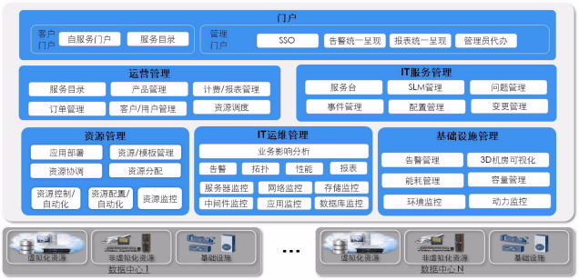
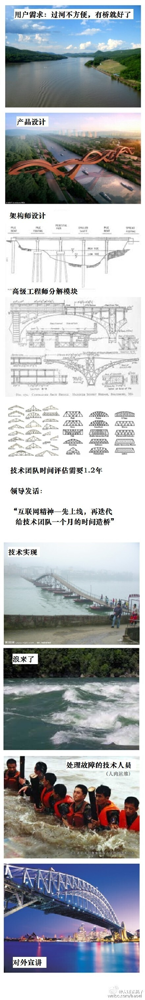

Cloud OS 总结¶
商用云平台的架构和设计。
基本概念¶
IaaS: Infrastructure as a Service PaaS: Plantform as a Service SaaS: Software as a Service VPNaaS: Virtual Private Network as a Serivce LBaaS: Load Balance as a Service SDNaaS: Software Define Network as a Service 编排：根据业务需求自动产生相应配置的虚拟机
华为平台¶
华为依靠Xen虚拟化技术，在开源的SLES11SP1的基础之上对操作系统进行修改，加入自己的agent进行监控管理， 节点的镜像都是自己修改过的，具有很高的可靠性和稳定性，适用于小型的数据中心。 之所以这样说，是因为华为的云平台在网络部署上只支持vlan的模式，这就限制了子网的个数，不能超过4096。
华为的ManageOne解决方案包括如下几个组件： FC, FusionCompute负责管理底层虚拟化资源，包括主机、存储、网络的虚拟化管理，可以直接操作底层硬件与虚拟化资源池 FM, FusionManager负责资源的进一步抽象，加入租户的概念，南向与FC对接，直接控制FC，北向与CSB进行对接，属于中间层 CSB, 运营平台（暂时称之为运营管理平台） IT服务管理平台（ITIL） 用户门户 整个架构还是很值得学习的，资源管理与业务分离，运营与运维平台分离，并且有一整套的业务流程规范在里面。
东信Aclome¶
Aclome平台是由CloudStack+XenServer搭建的一套虚拟化平台，东信主要是修改前台并加入了动环的监控，并能与施耐德的设备进行集成（意味着动环管理不能集成其他厂商），具有良好的界面及动环监控能力。 但东信本身的实质还是简单的开源产品，并没有经过仔细的改造和测试，类似这样的东西是不能进行商用的。并且重启后很多服务要手动重新调试，增加了部署和调试的难度。
总结¶
经过几轮的测试和学习，总结下云平台的几个要素：
- 资源的监控能力（重要****）
- 虚拟机的管理能力（重要***** 虚拟机为重要能力，能否商业化的前提之一）
- 弹性扩展和收缩能力（重要* autoscaling）
- 网络的管理扩展能力（重要** SDN）
- 租户的管理与隔离（重要** VPC业务）
- 块的动态挂载和扩展（重要***）
- 镜像的管理能力（重要*** 镜像市场，自动扩展镜像）
- 网络安全与虚拟机安全防护能力（重要*****）
- 负载均衡能力（重要**）
- 对象存储（重要** 云盘业务）
- 强大的API机制及相应的SDK（重要*）
软件开发模式¶
这里因为第一篇文章，也是我第一个接触到的成品软件，我这里发个小漫画，警醒我们这个行业的世人，莫学错了路。
